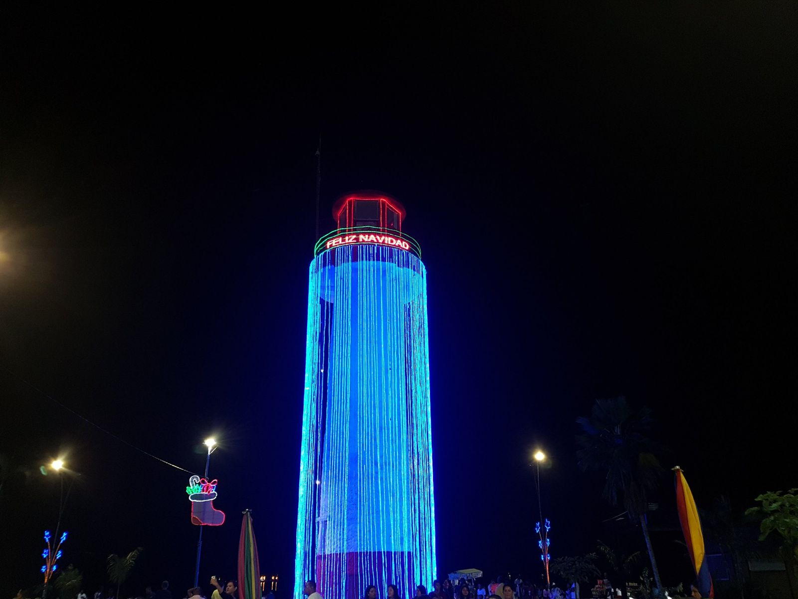
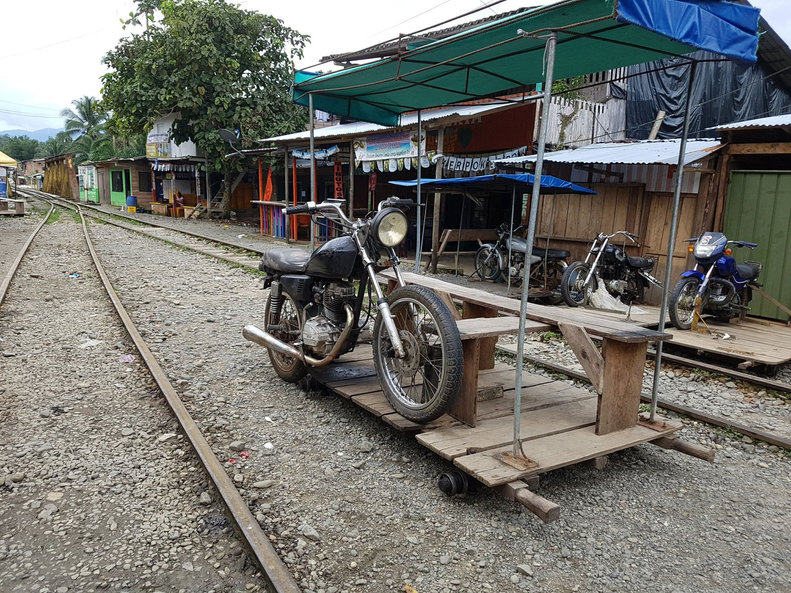
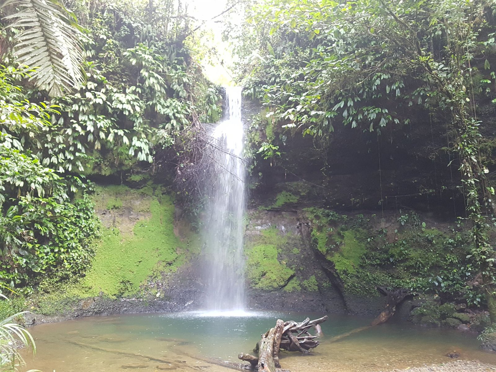
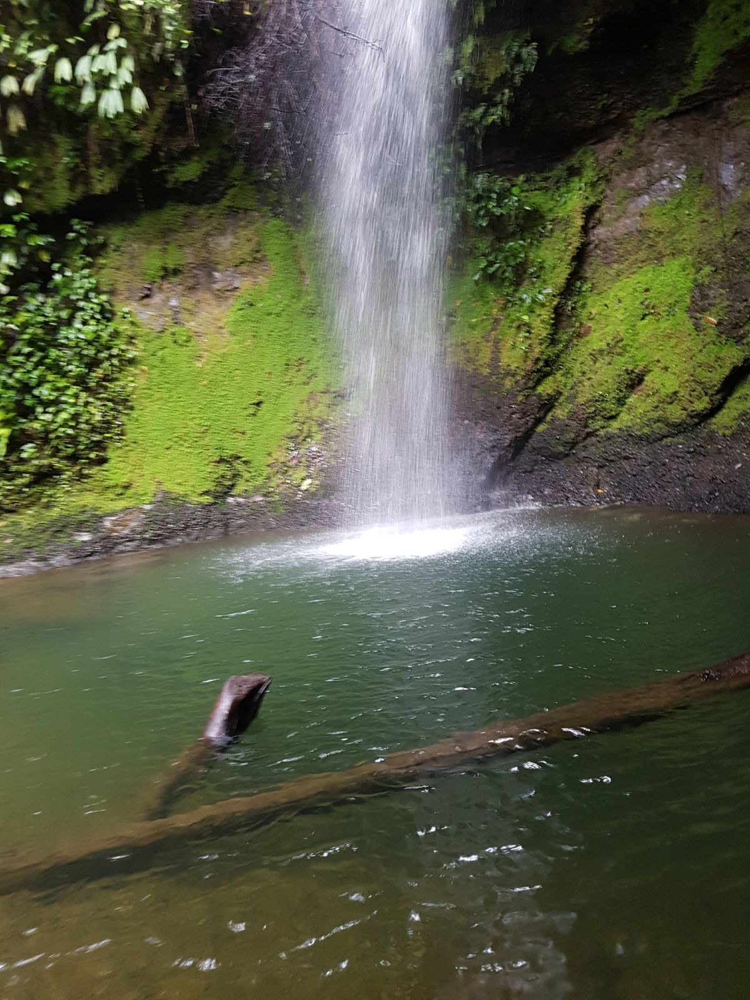
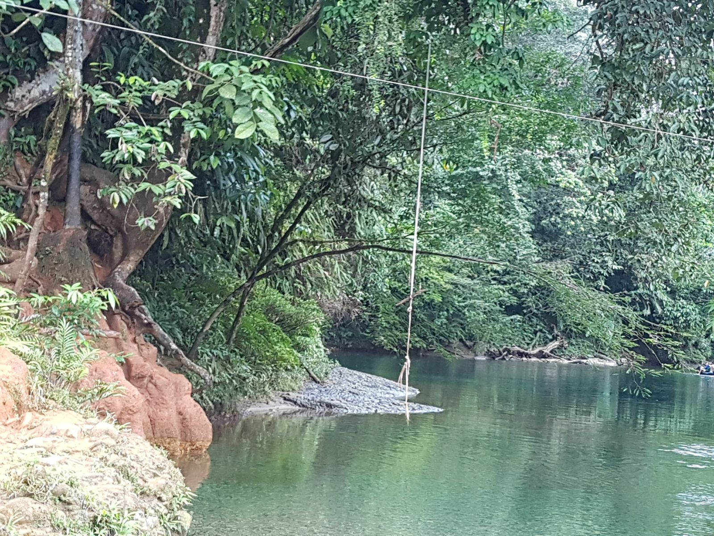
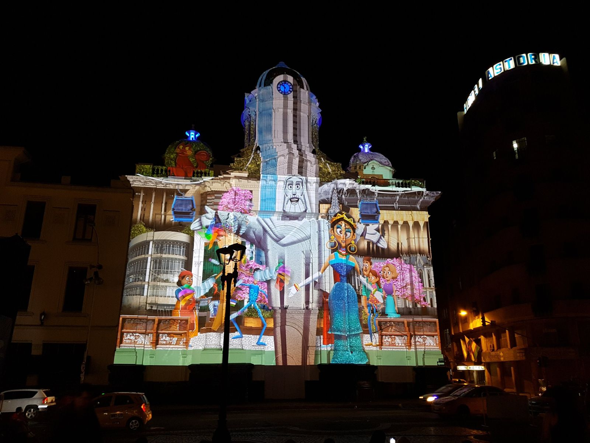
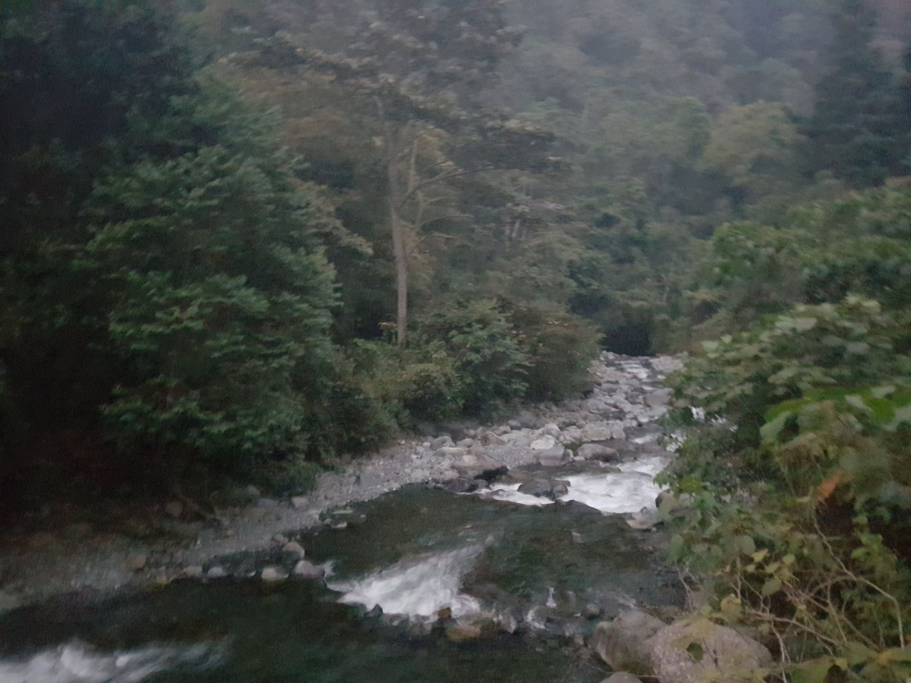
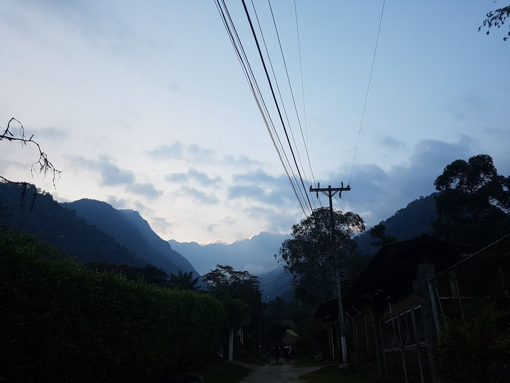

South America · Colombia · Cali and San Cipriano
Cali and San Cipriano, December 2017
After Salento I went to Cali, and Cali was not where I started. I think I took a bus to Cali and then another bus to Buenaventura, on the Pacific coast, on December 14. I did not write it down. On December 15 I went from Buenaventura to San Cipriano, a jungle village you reach by rail cart. By the evening I was back in Cali, and on December 16 I spent an evening by the Pance river. After that I tried to find a way to Leticia, in the Amazon, without flying. I failed and flew in the end. What happened after Leticia, the boat to Manaus, is in the Brazil chapter.
My conclusion up front: San Cipriano is worth a full day, and I would go to the waterfalls with a local guide. I was told it is easy to get lost on the way there, and I had a man with me who knew it. I do not remember what anything cost, because nine years have passed and the prices would be out of date anyway. Where a price appears below, it comes from a source I read in November 2026, and I say how old it is.
The times are my phone's clock, which Google Photos stores in Colombian time (GMT-5). The boxes hold research I did in November 2026, each with a source and a date, so you can tell it apart from what I remember. The hostel where I slept was recommended on Lametayel, an Israeli travel website. I do not remember its name.
December 14: Buenaventura at night
My first photos of the trip are from the evening in Buenaventura, and Google Photos puts them there. They show the town's Christmas lights: a tower wrapped in blue lights, and a plaza with a lit tree, boat-shaped light sculptures and a flag. I show only the tower, because the picture of the plaza has people under the lights. I do not remember what I ate, where I slept that night, or how I got to Buenaventura.

December 15: San Cipriano
San Cipriano is a village in the jungle that has no road. The way in is by brujita (Spanish for "little witch"), a wooden platform on wheels that rides the old railway line and is pushed by a motorbike. I took one in. I think I started from Córdoba, the stop on the Cali to Buenaventura road, but I did not note it. I took a photo of an empty brujita on the rails: a bench on a wooden pallet with a motorbike next to it, and a canopy of poles to hold off the rain. I also took a photo of a woman and a child on another brujita and I am leaving it out, because they did not agree to appear on a website.

What I found: an article from August 2024 puts San Cipriano near Buenaventura, about 100 km from Cali, with the last 6 km by brujita. The reserve covers 8,564 hectares, run by the regional environment authority (CVC) and a community foundation, and the activities it lists are waterfalls, tubing down the river, swimming in the pools and hikes (elpais.com.co). A guide published in August 2015, with no update date, says to take a Cali to Buenaventura bus (about 2 hours, about 20,000 pesos then), and to get off at Zaragoza on the Cali side, or to use the Córdoba entrance if you come from Buenaventura. It gives a brujita return ticket at 10,000 pesos each, a reserve fee of 2,000 pesos, a tube for 5,000 pesos and a last shuttle out at about 17:00. It says to carry cash, because there are no cards and no ATMs in the village, and not to walk to the waterfall alone unless you know the way, because the hike is semi-technical and takes 30 to 45 minutes each way (caliadventurer.com).
What I did not find: any price from this year. Every figure above except the distance is from 2015 and will be out of date. I also found no current fee for a guide, no opening hours, and no word on the state of the rails or the river today. My river video below is from 17:21, later than the 2015 guide's last shuttle, and I do not remember how I got back.
The village and the guide
The village is one gravel street with brick and tin-roofed houses, small restaurants and hostels, and tractor tyres stacked outside, which are the tubes. I have no record of where I ate.
For the waterfalls I went with a guide, a man who knew the way and walked ahead of me on the trail. I do not remember what I paid him.


The water was clear and green. I do not remember whether I swam in this pool. There were other people in the water far from me, and I left those pictures out. Down the river I took a picture of a pool with a rope hanging over it.

December 15, at night: a light show in Cali
That night I was in Cali. I do not remember how I got from San Cipriano back to the city, but the next photo is at night in front of a historic building with a light show projected on its front, and the clip below was filmed at 22:51, six minutes after the photo. A sign on the tall building at the right reads as Hotel Astoria. I did not identify the building with the projection. I searched, and I did not find a source that says which building it was.

The words in the clip mean "we are in the World Cup", which fits the time: Colombia had qualified for the 2018 tournament. I did not see how long the show ran, or whether it was a one-off for Christmas.
December 16: the Pance river
On December 16 I took three photos in the evening, and Google Photos puts them in Pance, the river area on the southwest edge of Cali. They show a rocky river between wooded slopes in a mist, and the sky going dark behind a power line. I do not remember how I got there, what I did, or what I paid.


What I found: a city environment office article of May 2023 places the Pance river in the Pance sector of Santiago de Cali. It says people come to bathe, walk the green paths, and cook outdoors with family and friends, and it asks visitors to take their rubbish with them and to put cooking fires out in the dry season (cali.gov.co).
What I did not find: a bus line and fare to Pance, any entry fee, or a word on the state of the river today.
After Cali: trying to reach Leticia without flying
Leticia is a town in the far south of Colombia on the Amazon. I wanted to reach Brazil by the river, so I asked the owner of the hostel how to get to Leticia without a flight. She told me to go to a point in the south of Colombia. I do not remember the name of the place, and I could not find it in my photos: there are none from December 17, 18 or 19. When I got there I was told that from that place you can reach Leticia only by helicopter. So I went back to Bogotá and flew to Leticia.
The first photo I have after Pance is a screenshot from December 20 at 22:19 Colombian time, a phone search for the town of Paraty in Brazil. I do not know where I was when I took it, and I do not remember the date I arrived in Leticia.
What I found: a travel guide with no date on the page, copyrighted 2026, lists the ways in as flights from Bogotá, and boats from Tabatinga, the Brazilian town across the border, to Iquitos in Peru (about 10 hours and 150,000 pesos) and to Manaus in Brazil (about 30 hours by fast boat and about 4 days by slow boat) (frommers.com). A route planner, with no date on the page, shows no route from Pasto to Leticia that stays inside Colombia. The overland options it lists run through Ecuador and Peru, and the rest are flights (rome2rio.com).
What I did not find: the place I was sent to, any scheduled helicopter, or a source that confirms what I was told. I found no road from the rest of Colombia to Leticia, and no source says there is one. That fits what I was told, but I can only tell you what happened to me.
The night in Leticia, the walk to Tabatinga and the boat to Manaus are in the Brazil chapter.
What I do not remember
I do not remember the name of the hostel, or which nights I slept there. I do not remember how I got from Salento to Cali (probably by bus), or from San Cipriano back to Cali. I do not remember the price of the buses, the brujita, the guide, the entrance or the hostel. I do not know which building the light show was on, the name of the town I was sent to, the exact date I reached Leticia, or the order of the waterfall photos, because I have no times for them. When you plan this, check the prices and the transport at the source.